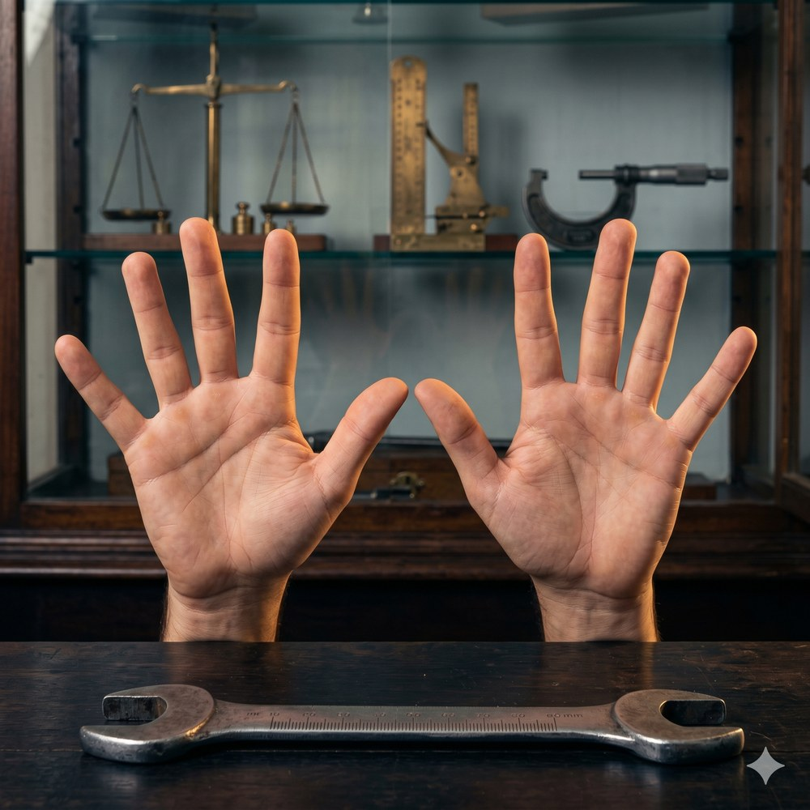
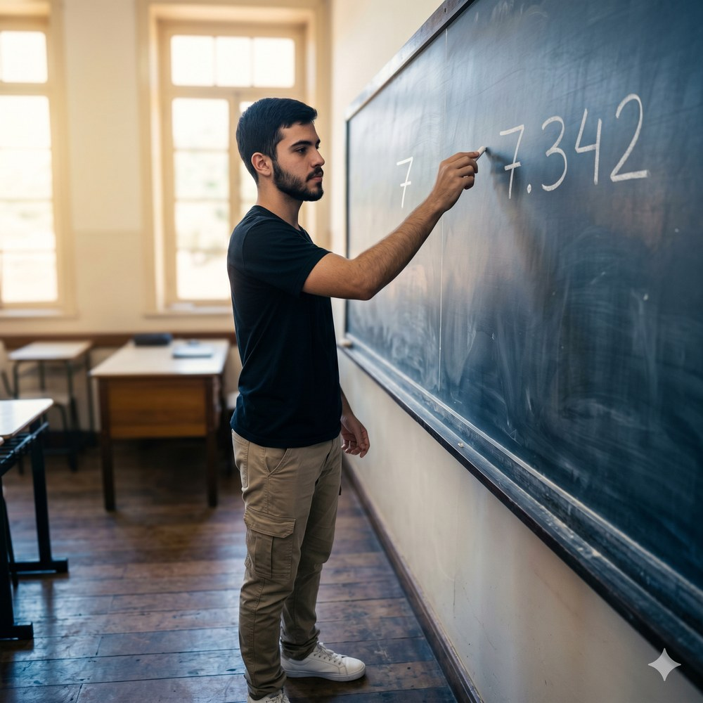
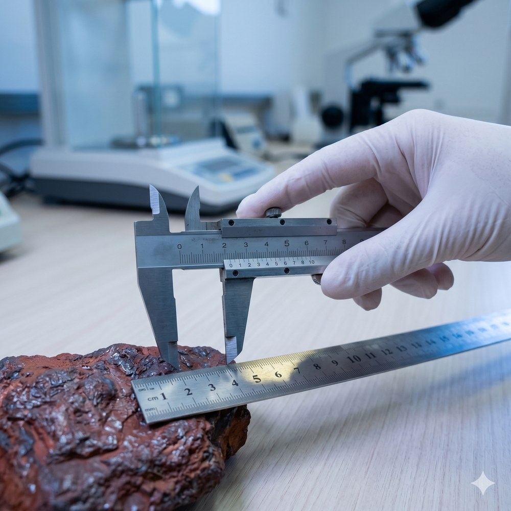
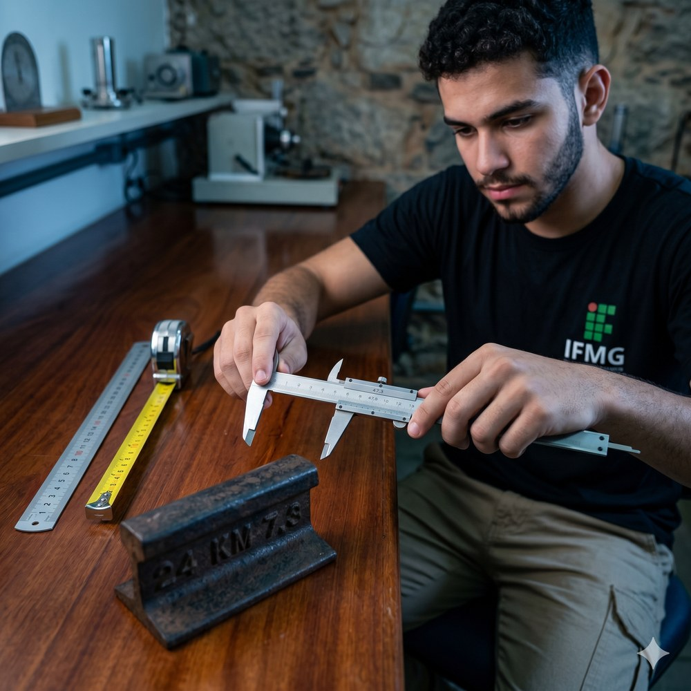
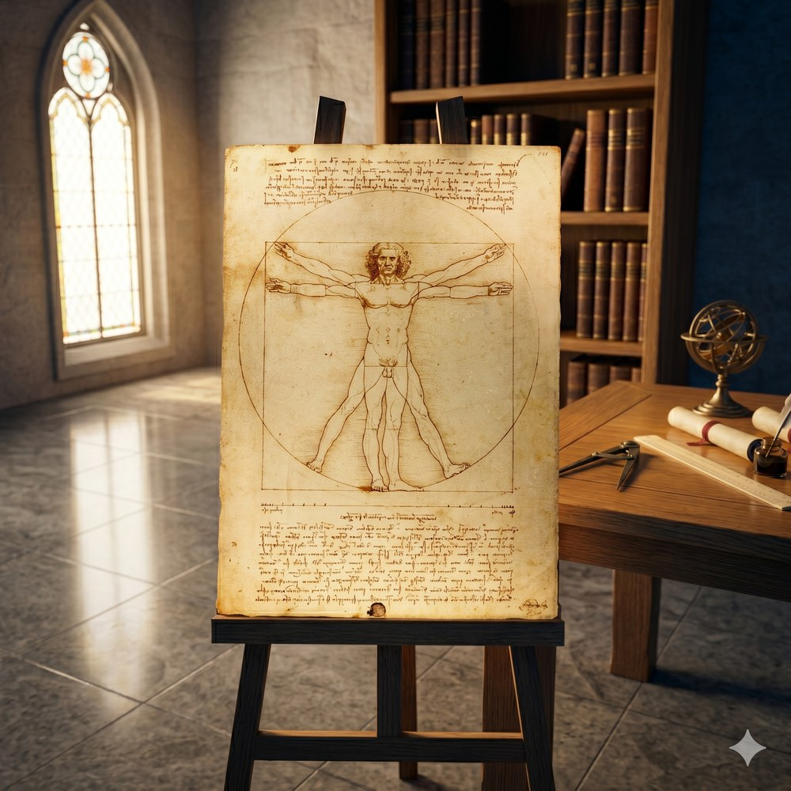

O sistema decimal é uma convenção cultural: dez símbolos (0–9) que se combinam por posição para representar qualquer quantidade.
Na Estação de Ouro Preto convivem três bases:
a placa "540,3 km" (base 10) · o painel "14:45" (base 60 nos minutos, base 24 nas horas) · a data "1888" (base 10).
"O zero é uma abstração: a representação de uma ausência."

Algarismo é o símbolo (um de {0,1,…,9}). Número é a quantidade formada pela combinação posicional de algarismos.
Aplicação: 540,3 = 5·10² + 4·10¹ + 0·10⁰ + 3·10⁻¹ = 500 + 40 + 0 + 0,3 = 540,3
"O zero não é 'nada' — é uma posição."

Separa a parte inteira (potências não negativas de 10) da parte decimal (potências negativas de 10).
Exemplo — placa da estação:
540,3 km = 540 km + 0,3 km = 540 km + 300 m

| Instrumento | Precisão | Faixa |
|---|---|---|
| Trena de aço | ±1 mm | até 50 m |
| Paquímetro | 0,02 mm | 0–300 mm |
| Micrômetro | 0,001 mm | 0–25 mm |

Algarismos certos (lidos direto do instrumento) + algarismo duvidoso (estimado pelo observador). Nunca escreva mais do que sabe.
| Regra | Exemplo | Alg. sig. |
|---|---|---|
| Todos não nulos | 347 | 3 |
| Zeros entre não nulos | 3.047 | 4 |
| Zeros à esquerda | 0,0034 | 2 |
| Zeros após vírgula | 3,400 | 4 |
| Notação científica | 3,40 × 10³ | 3 |
Registrar precisão maior do que o instrumento permite é tecnicamente falso — e contestável em auditoria.

Análise: Leonardo traduziu em traço e medida o que Vitrúvio descrevera em palavras. O Homem Vitruviano é, em essência, um sistema de representação posicional: o corpo humano é a unidade de referência, e cada parte é fração ou múltiplo dela — a mesma lógica que o sistema decimal aplica ao número. Assim como a base 10 permite exprimir qualquer magnitude com apenas dez símbolos, Leonardo mostrou que qualquer dimensão do corpo pode ser expressa como proporção de um padrão único.
Sofia, Pedro e Lucas, diante da placa "540,3 km" da Estação Ferroviária, fizeram o mesmo gesto intelectual: escolheram uma unidade (o quilômetro), subdividiram-na em frações decimais e localizaram uma distância dentro de um sistema coerente de posições. O técnico em mineração que mede a galeria com trena milimetrada e o astrônomo que escreve 3,4 × 1026 m para a distância a Andrômeda usam a mesma invenção — a notação posicional de base 10, que Laplace chamou de uma das maiores conquistas intelectuais da humanidade.
Sucesso na Provinha! Dez questões de fechamento (peso 10 %). Leia com calma e use a Resolução Científica de Problemas — Protocolo C5 para orientar seu raciocínio.